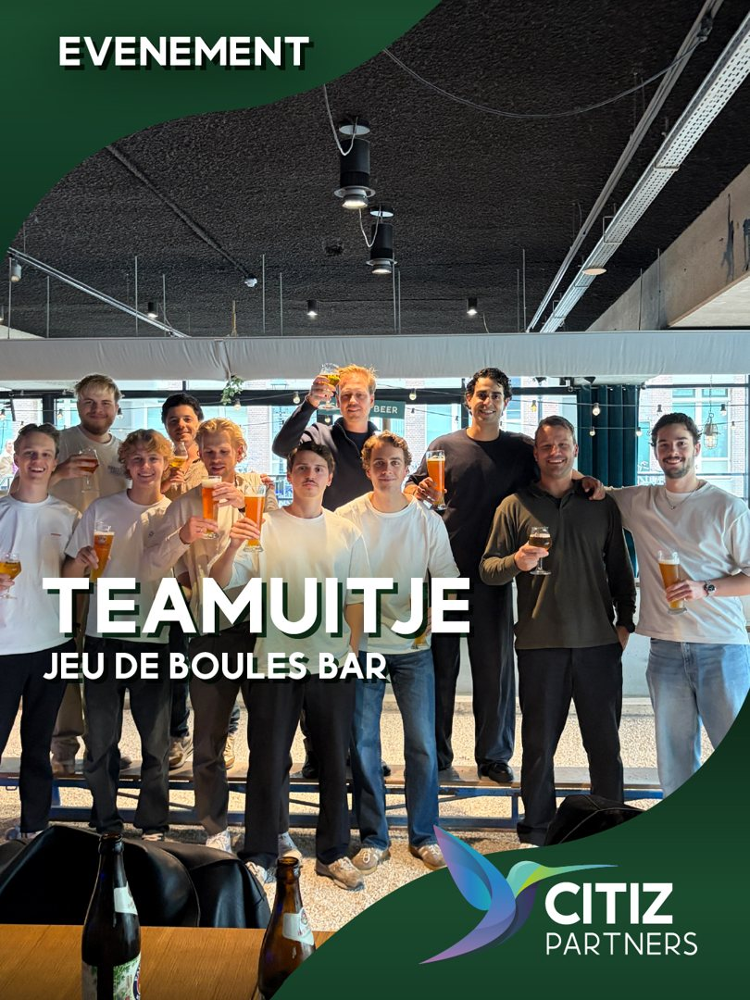
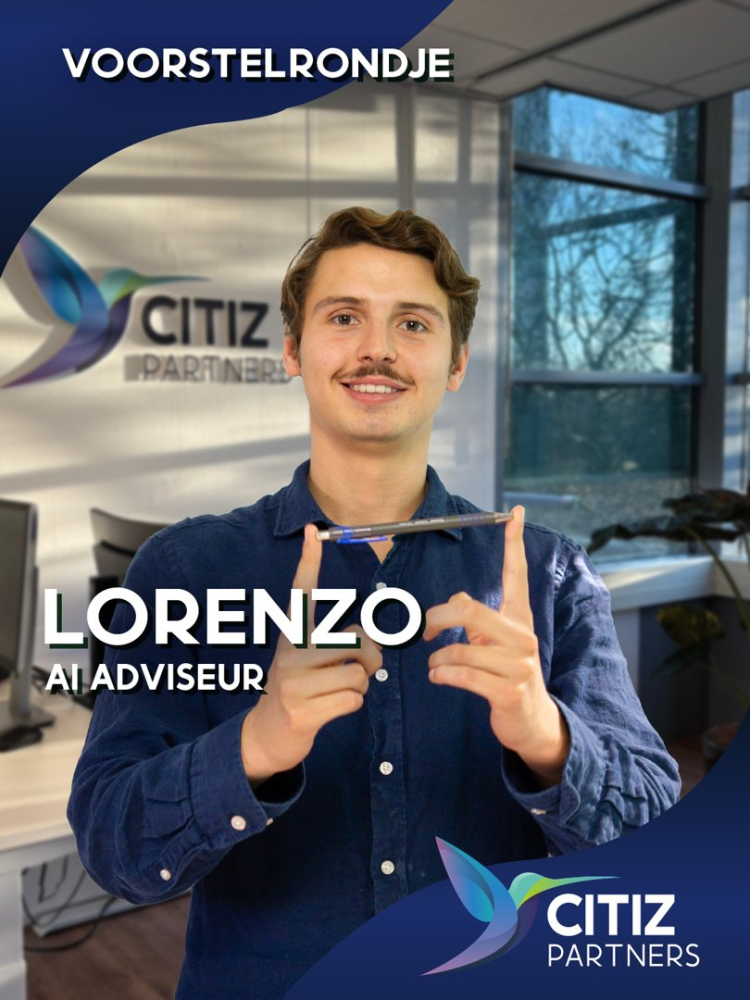
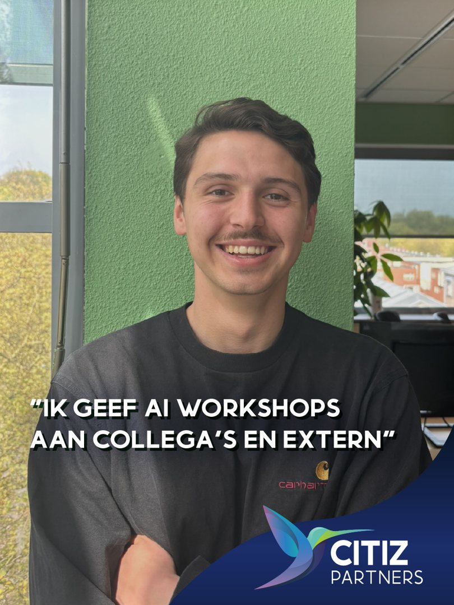
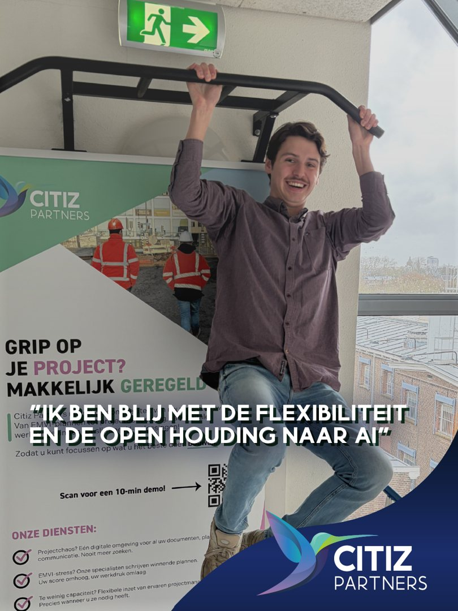
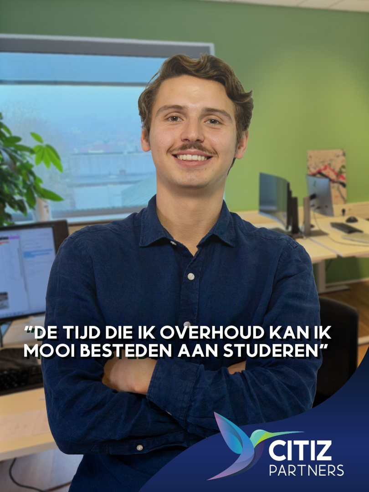

Minder gedoe, meer werk
Recruitment for a small consultancy in construction, infrastructure and energy.
Citiz Partners wanted more suitable applicants for its vacancies. My research showed that reach was never the problem. Every employee I interviewed had joined through someone they knew, and 80 percent of the 35 job seekers in my survey had given up on a vacancy at some point because they couldn't see what it was like to work there.
So I developed the concept Minder gedoe, meer werk, which means less hassle and more time for the work you love. It follows an applicant's route through LinkedIn, Instagram, the careers page and job fairs. For Instagram I design and create the content myself, showing real colleagues in an aftermovie of the team outing and in meet the team posts. For job fairs I designed a physical part that helps Citiz meet people who think the way they do.
I'm still working on this project. In the coming weeks I will test the content with people from the target group and improve it based on what I learn. I will add the results here once they are in.




